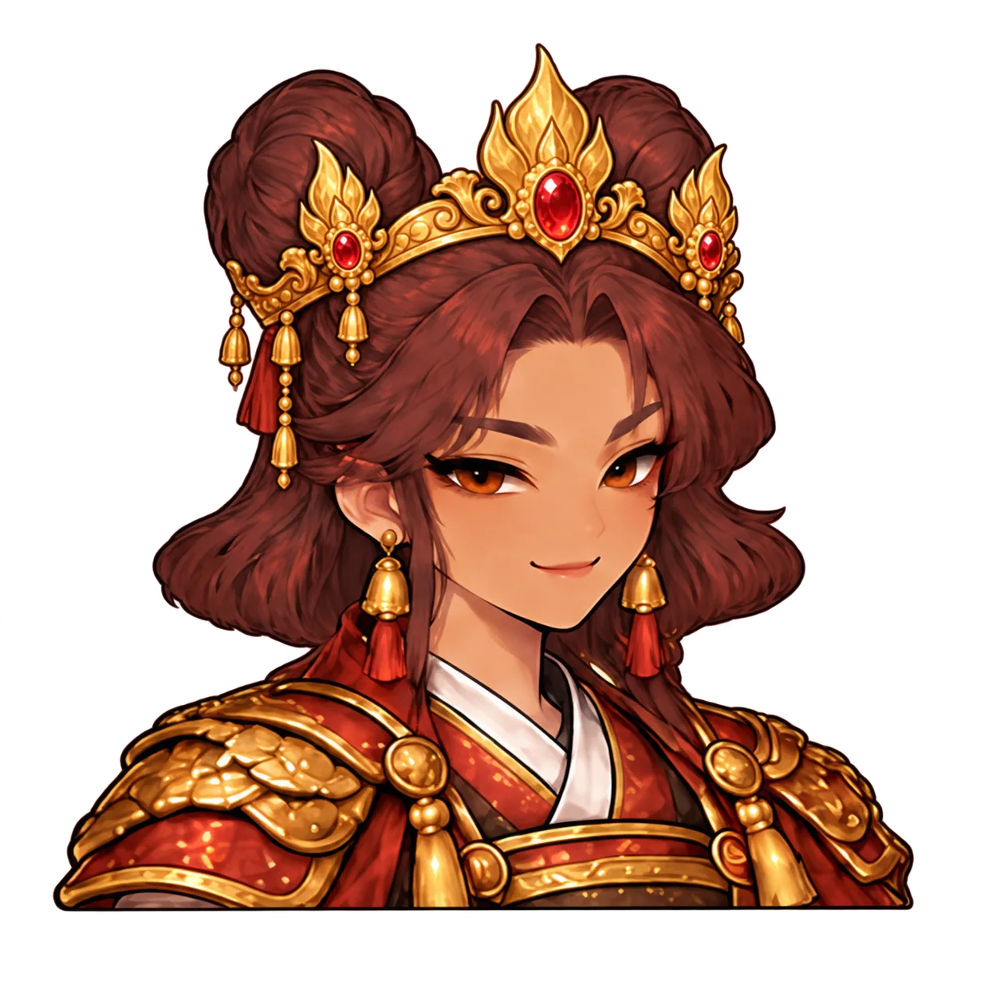
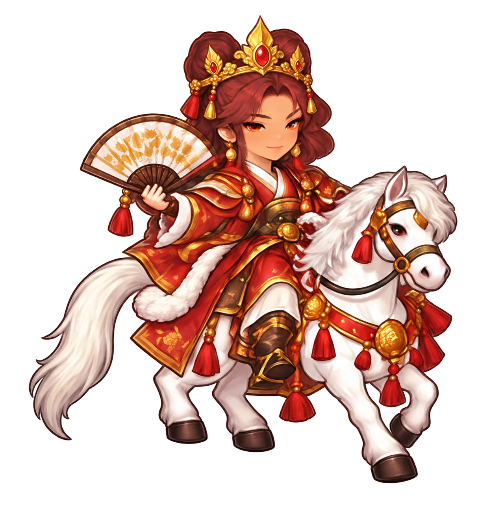
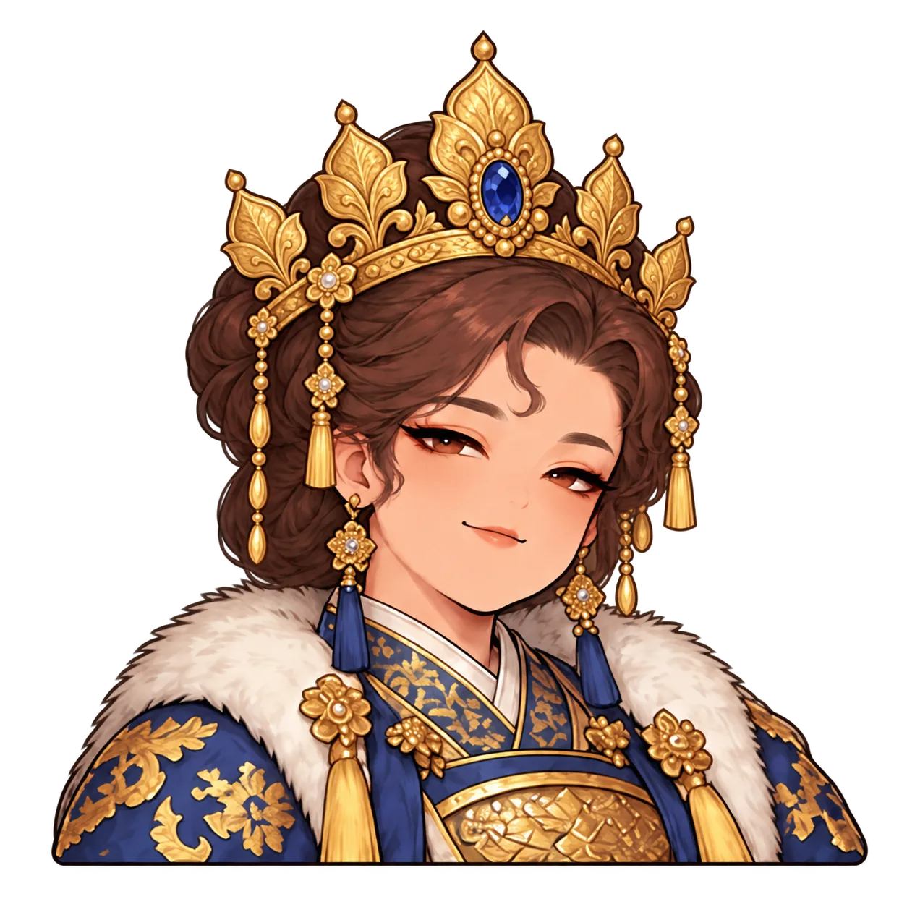
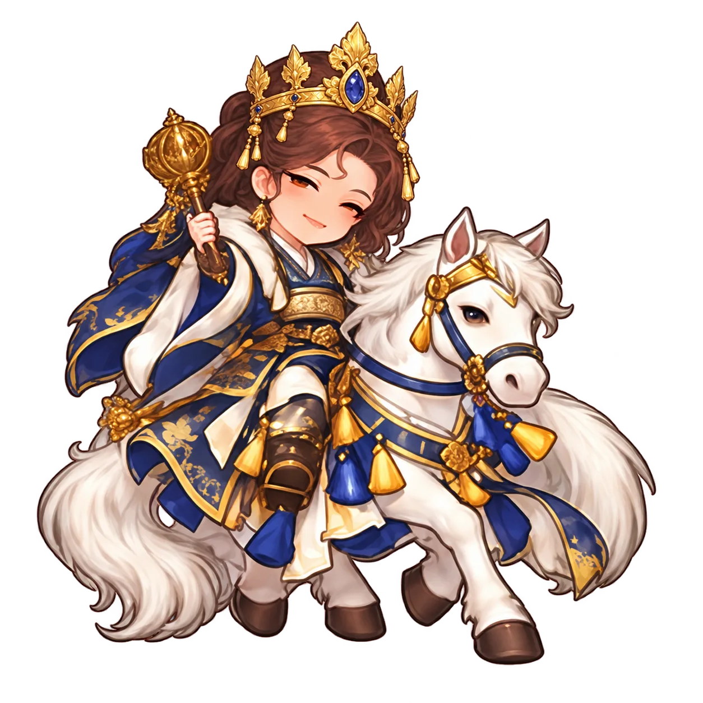
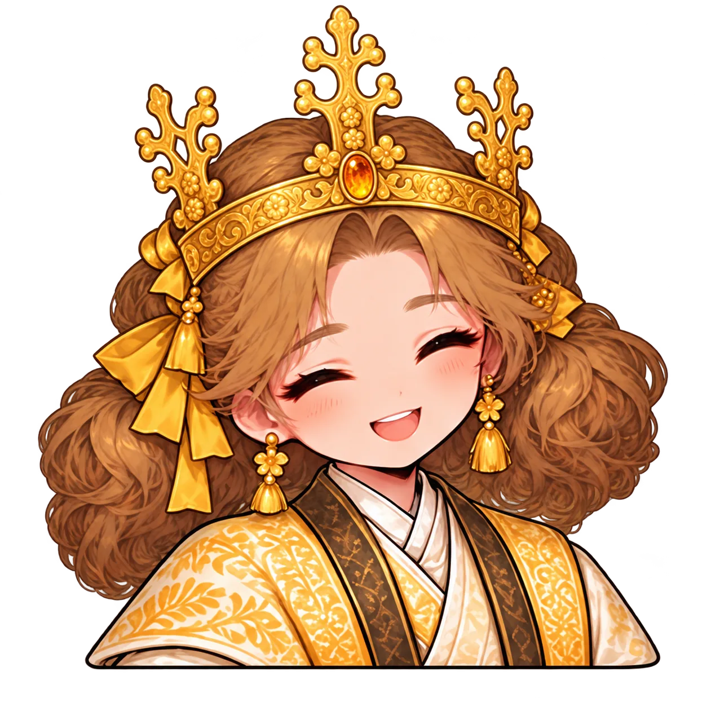

<style>body{margin:0;background:#ded0b6;font:18px sans-serif}main{display:grid;grid-template-columns:repeat(3,300px)}figure{margin:0;text-align:center;padding:8px}img{display:block;width:284px;height:320px;object-fit:contain}h3{margin:4px}</style><main><figure><h3>yeongnyu portrait</h3></figure><figure><h3>yeongnyu front</h3></figure><figure><h3>yeongnyu information</h3></figure><figure><h3>mu portrait</h3></figure><figure><h3>mu front</h3></figure><figure><h3>mu information</h3></figure><figure><h3>beopmin portrait</h3></figure><figure><h3>beopmin front</h3></figure><figure><h3>beopmin information</h3></figure></main>